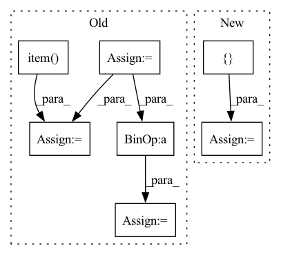

Pattern ID :41300
Before Change
// computing loss, metrics on test set
loss = loss_fn(output, target)
batch_size = data.shape[0]
total_loss += loss.item() * batch_size
for i, metric in enumerate(metric_fns):
total_metrics[i] += metric(output, target) * batch_size
if __name__ == "__main__":After Change
//for i, metric in enumerate(metric_fns):
// total_metrics[i] += metric(output, target) * batch_size
df = pd.DataFrame({ "image_id": image_id, "label": label} )
out_csv = os.path.join(args.out_dir, "test_pred.csv")
df.to_csv(out_csv, index=False)
logger.debug("done.")In pattern: SUPERPATTERN
Frequency: 3
Non-data size: 7
Instances Fragment ID: 116332702
Project Name: deeperlearner/pytorch-template
Commit Name: 49ac2e7c4e18177db31ae741c8dfd7cdbf5ca0f0
Time: 2020-11-11
Author: b04202035@g.ntu.edu.tw
File Name: test.py
M Class Name: AnonimousClass
N Class Name: AnonimousClass
M Method Name: main(1)
N Method Name: main(1)
M Parent Class:
N Parent Class:
M File Name: test.py
N File Name: test.py
M Start Line: 15
M End Line: 62
N Start Line: 20
N End Line: 76
Before Change
loss_agg = 0
loss_bbox_agg = 0
loss_cls_agg = 0
loss_seg_ce_agg = 0
loss_seg_dice_agg = 0
for data, _, bboxes, seg_mask in tqdm(self._val_loader):
// Put data to gpu
data = data.to(device=self._device)
targets = defaultdict(list)
for item in bboxes:
targets["target_boxes"].append(item[0].to(dtype=torch.float, device=self._device))
targets["target_classes"].append(item[1].to(device=self._device))
targets["target_seg"] = seg_mask.squeeze().to(device=self._device)
// Make prediction
with autocast():
losses, predictions = self._model.train_step(data, targets, evaluation=True)
loss_abs = sum(losses.values())
loss_agg += loss_abs.item()
loss_bbox_agg += losses["reg"].item()
loss_cls_agg += losses["cls"].item()
loss_seg_ce_agg += losses["seg_ce"].item()
loss_seg_dice_agg += losses["seg_dice"].item()
// Evaluate validation predictions based on metric
// pred_boxes, pred_classes, pred_scores = inference(predictions)
self._evaluator.add(
pred_boxes=[boxes.detach().cpu().numpy() for boxes in predictions["pred_boxes"]],
pred_classes=[classes.detach().cpu().numpy() for classes in predictions["pred_labels"]],
pred_scores=[scores.detach().cpu().numpy() for scores in predictions["pred_scores"]],
gt_boxes=[gt_boxes.detach().cpu().numpy() for gt_boxes in targets["target_boxes"]],
gt_classes=[gt_classes.detach().cpu().numpy() for gt_classes in targets["target_classes"]],
)
loss = loss_agg / len(self._val_loader)
loss_bbox = loss_bbox_agg / len(self._val_loader)
loss_cls = loss_cls_agg / len(self._val_loader)
loss_seg_ce = loss_seg_ce_agg / len(self._val_loader)
loss_seg_dice = loss_seg_dice_agg / len(self._val_loader)
metric_scores = self._evaluator.eval()After Change
targets = []
for item in bboxes:
target = {
"boxes": item[0].to(dtype=torch.float, device=self._device),
"labels": item[1].to(device=self._device)
}
targets.append(target)
// Make prediction
out = self._model(data, mask) Fragment ID: 116332699
Project Name: bwittmann/transoar
Commit Name: d1d610ce7014a86c72c7d5625dbe82be40b2c340
Time: 2022-06-24
Author: bastian.wittmann@tum.de
File Name: transoar/trainer.py
M Class Name: Trainer
N Class Name: Trainer
M Method Name: _validate(2)
N Method Name: _validate(2)
M Parent Class:
N Parent Class:
M File Name: transoar/trainer.py
N File Name: transoar/trainer.py
M Start Line: 105
M End Line: 146
N Start Line: 100
N End Line: 141
Before Change
loss_agg = 0
loss_bbox_agg = 0
loss_cls_agg = 0
loss_seg_ce_agg = 0
loss_seg_dice_agg = 0
for data, _, bboxes, seg_mask in tqdm(self._train_loader):
// Put data to gpu
data = data.to(device=self._device)
targets = defaultdict(list)
for item in bboxes:
targets["target_boxes"].append(item[0].to(dtype=torch.float, device=self._device))
targets["target_classes"].append(item[1].to(device=self._device))
targets["target_seg"] = seg_mask.squeeze().to(device=self._device)
// Make prediction
with autocast():
losses, _ = self._model.train_step(data, targets, evaluation=False)
loss_abs = sum(losses.values())
self._optimizer.zero_grad()
self._scaler.scale(loss_abs).backward()
// Clip grads to counter exploding grads
// max_norm = self._config["clip_max_norm"]
// if max_norm > 0:
// torch.nn.utils.clip_grad_norm_(self._model.parameters(), max_norm)
self._scaler.step(self._optimizer)
self._scaler.update()
loss_agg += loss_abs.item()
loss_bbox_agg += losses["reg"].item()
loss_cls_agg += losses["cls"].item()
loss_seg_ce_agg += losses["seg_ce"].item()
loss_seg_dice_agg += losses["seg_dice"].item()
self._scheduler.step()
loss = loss_agg / len(self._train_loader)
loss_bbox = loss_bbox_agg / len(self._train_loader)
loss_cls = loss_cls_agg / len(self._train_loader)
loss_seg_ce = loss_seg_ce_agg / len(self._train_loader)
loss_seg_dice = loss_seg_dice_agg / len(self._train_loader)
self._write_to_logger(After Change
// Put data to gpu
data, mask = data.to(device=self._device), mask.to(device=self._device)
targets = []
for item in bboxes:
target = {
"boxes": item[0].to(dtype=torch.float, device=self._device),
"labels": item[1].to(device=self._device)
}
targets.append(target)
// Make prediction
out = self._model(data, mask)
loss_dict = self._criterion(out, targets)
// Create absolute loss and mult with loss coefficient
loss_abs = 0
for loss_key, loss_val in loss_dict.items():
loss_abs += loss_val * self._config["loss_coefs"][loss_key.split("_")[0]]
self._optimizer.zero_grad()
loss_abs.backward()
// Clip grads to counter exploding grads
max_norm = self._config["clip_max_norm"]
if max_norm > 0:
torch.nn.utils.clip_grad_norm_(self._model.parameters(), max_norm)
self._optimizer.step()
loss_agg += loss_abs.item()
loss_bbox_agg += loss_dict["bbox"].item()
loss_giou_agg += loss_dict["giou"].item()
loss_cls_agg += loss_dict["cls"].item()
loss = loss_agg / len(self._train_loader) Fragment ID: 116332707
Project Name: bwittmann/transoar
Commit Name: d1d610ce7014a86c72c7d5625dbe82be40b2c340
Time: 2022-06-24
Author: bastian.wittmann@tum.de
File Name: transoar/trainer.py
M Class Name: Trainer
N Class Name: Trainer
M Method Name: _train_one_epoch(2)
N Method Name: _train_one_epoch(2)
M Parent Class:
N Parent Class:
M File Name: transoar/trainer.py
N File Name: transoar/trainer.py
M Start Line: 46
M End Line: 88
N Start Line: 42
N End Line: 83